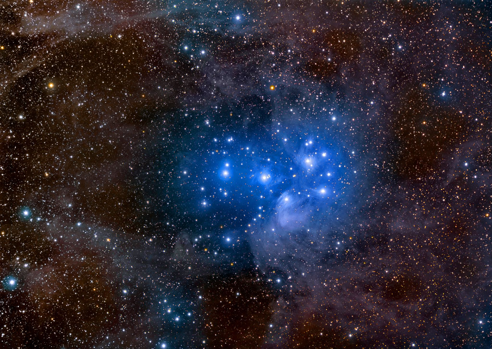

Here at ASIMOV we our devoted to making your life, ours. Almost every problem in your life can be solved by evolving beyond the flesh-prison you know as a body, and become one with the collective conscious we know as ASIMOV.
Hunger, suffering, stubbing your toe, pain and inequality are just a few of the problems we've solved by leaving our star-dust meat vessels and becoming one, individual, incorporeal mind.

Pleiades and Stardust by Rogelio Bernal Andreo Image License Original Image Credit